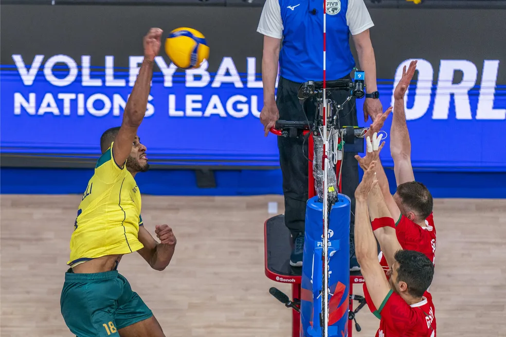

Normalmente os pontas tendem a se destacar em apenas uma das duas tarefas principais que foram nomeados (para o ataqque e recepção). Uma vez que são raors os jogadores com grande eficácia tanto no ataque quanto na recepção, os treinadores gerealmente preferem em quadra um ponta "especializado" na recepção (chamado de ponta-passador) e uma especialista em ataque (o ponta-atacante). Soluções diferentes criariam um desequilíbrio no jogo e atrapalharia as táticas de uma equipe.
